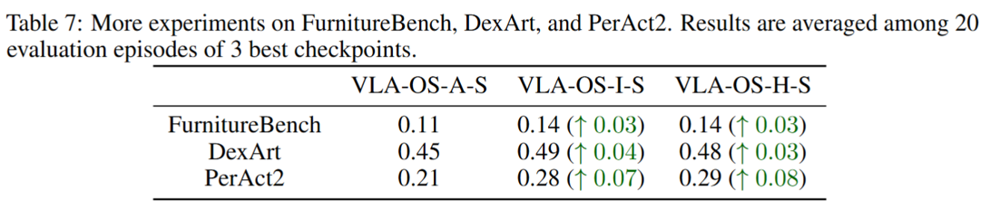
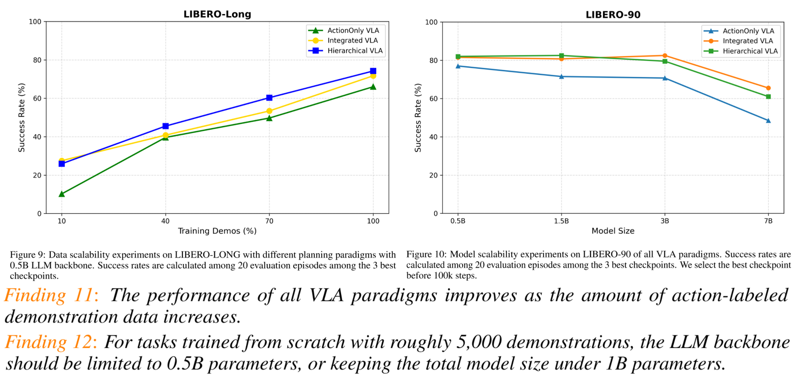
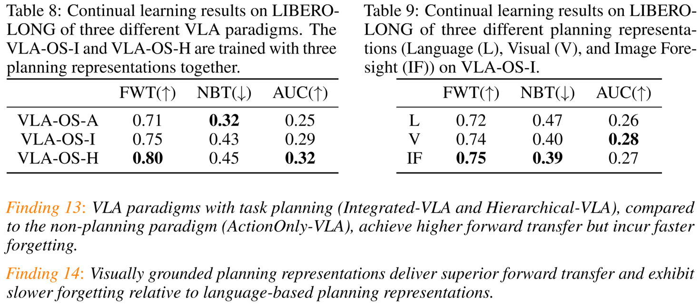

VLA-OS: Structuring and Dissecting Planning Representations and Paradigms in Vision-Language-Action Models
Anonymous
Supp
More Benchmark Results

Data and Model Scalability Experiments Results

Continual Learning Experiments Results

-->